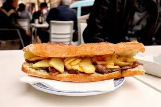

Receta
pan frica, marraqueta o pan de hamburguesa grande
150–200 g de bistec de carne de caballo (también puede ser carne molida si prefieres estilo hamburguesa)
1 diente de ajo (opcional)
Aceite o manteca para cocinar
1 cebolla (opcional, salteada o caramelizada)
Mostaza, mayonesa, ají o chimichurri (a gusto)
